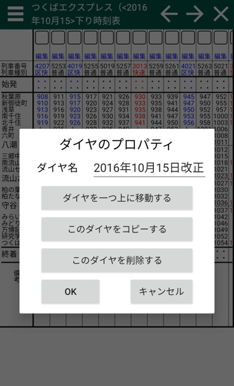

ダイヤのプロパティ ダイヤとは「下り時刻表」「上り時刻表」の時刻表組を持ちます。 1路線の中には複数のダイヤを含むことができます。平日ダイヤと土日ダイヤは異なる時刻になる路線が多いですが、ダイヤを用いる事で1路線のなかに複数の時刻表を設定する事ができます。 このダイヤログの出し方 メニューのダイヤ名部分をタップすると開きます。  このダイヤをコピーする 新しいダイヤを追加します。新しいダイヤの中にこのダイヤに含まれる列車を全てコピーします。